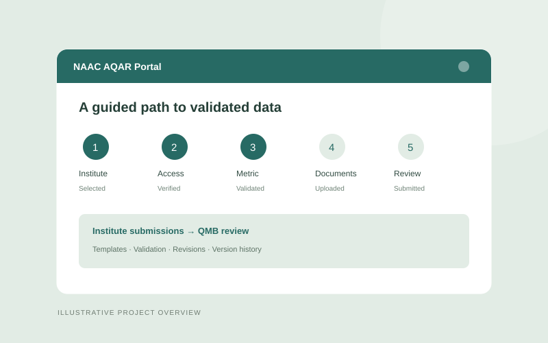

NAAC AQAR Portal
Collecting clean, validated institutional data for NAAC submission through a guided portal and QMB review workflow.
(Deemed University)

The purpose
The portal brings institute authentication, metric-specific templates, CSV validation, supporting documents and review into one structured process. Institutes can track submissions and respond to correction requests through their dashboard.
Worked on the NAAC AQAR portal and upgraded Portal 2.0 to address issues identified in the earlier workflow. Coordinated institutional data requirements across 43 institutes.
How the work comes together.
Select the institute
Choose the institute mapped in Google Sheets.
Verify authorised access
The coordinator enters the authorised email and passcode.
Validate metric data
Select the criterion and metric, download its template, and upload the completed CSV. Nil and Not Applicable are separate choices.
Upload supporting documents
Files go to the submission folder in Drive. Editing access changes to viewing after final submission.
Review and submit
Confirm the submission details and declarations. The institute dashboard shows status and correction requests.
QMB review and revisions
QMB reviews and approves or requests corrections. Earlier files are retained in Drive and earlier CSV records are backed up in Sheets.
What this supports
A common submission and review process across institutes, with traceable corrections and retained previous versions.
See the workflow.
Illustrated demonstration with narration and English captions. Confidential records are excluded; any sample data is fictional.
Read the walkthrough transcript
Clean, validated data for NAAC submission
The purpose of the NAAC AQAR portal is to collect clean, validated data from university institutes for submission to NAAC, the National Assessment and Accreditation Council. At Symbiosis, the portal supports forty-three institutes through five steps: institute selection, staff verification, metric and CSV validation, supporting document upload, and final submission. QMB then reviews the records and requests corrections where needed.
Institute selection and staff verification
First, the coordinator selects an institute from the list mapped in Google Sheets. In step two, the portal checks the authorised email address and shared passcode for that institute. The details shown here are fictional. After verification, the coordinator can continue with submission and access the institute dashboard.
Templates and validation at metric level
In step three, the coordinator selects a criterion and metric, downloads its predefined template, completes the data, and uploads the CSV. Google Apps Script defines the expected columns and validation rules. If the metric applies but there is no data, the coordinator chooses Nil. If the metric does not apply, they choose Not Applicable.
Document upload and final submission
In step four, supporting documents are uploaded to a dedicated Google Drive folder. The coordinator has editing access during this stage. In step five, they review the details and accept the declaration checkboxes. After final submission, the coordinator’s folder access changes from editing to viewing, and the submission is available for QMB review.
Institute dashboard: see what needs action
The institute dashboard shows submission history, review status, and requested corrections. Coordinators can identify approved records and items returned for CSV or supporting-document updates. These numbers are demonstration data: thirty-six approved, nine pending, four requiring correction, and two not submitted, out of fifty-one metrics. They are not actual institute performance results.
QMB dashboard: review and coordinate
Authorised QMB reviewers use the admin dashboard to inspect submissions and mark them approved or requiring correction. The interface also includes institute filters, criterion summaries, a status tracker, and report export options. All figures here are synthetic and internally consistent. For example, fifteen hundred approved, four hundred fifty pending, and one hundred fifty redo records total twenty-one hundred submissions.
A complete review-and-correction loop
A completed submission moves to QMB review. If changes are needed, the institute sees the redo request in its dashboard, makes the requested correction, and resubmits for review. Approval completes the current review. The portal also preserves earlier versions, so a correction does not mean losing the previous submission.
Version backups during resubmission
For supporting documents, older versions remain backed up in Google Drive and revised files go into a new submission folder. For CSV data, the old records are backed up in Google Sheets before the current records are overwritten. This preserves earlier versions for reference while allowing the current submission to be updated.
Connecting collection, validation and review
The solution connects Google Apps Script for workflow and validation, Google Sheets for structured records and backups, and Google Drive for documents and folder permissions. It demonstrates portal development, institutional reporting, and review coordination. The accompanying case study explains the full process. No confidential records, working credentials, or unverified time-saving claims are included.
Take a closer look.
6-page case study · PDF